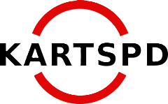

Enxergue seu ritmo
Acompanhe tempo de volta, velocidade e comparação de setores em uma tela feita para consultas rápidas durante a pilotagem.

Fale com a gente ↗O painel Velo mostra seu ritmo na pista. O Emerson analisa as voltas, envia dicas ao painel e registra o setup do kart a partir do áudio que você manda pelo WhatsApp.
Acompanhe a volta no Velo. No box, consulte o Emerson para descobrir onde ganhou tempo e quais ajustes usou naquela sessão.
O Velo é um painel digital instalado no kart. Ele mostra informações da pilotagem enquanto você está na pista e registra os dados da sessão para você analisar depois, com mais calma, no box.
Assim como um painel de instrumentos, o Velo coloca informações ao alcance do piloto. A diferença é que ele também guarda o contexto de cada treino para ajudar você a entender sua evolução.
Explorar a simulação do VeloAcompanhe tempo de volta, velocidade e comparação de setores em uma tela feita para consultas rápidas durante a pilotagem.
Consulte as voltas registradas e o resumo da sessão para reconhecer seus melhores momentos e acompanhar sua consistência.
Leve os dados para o ambiente de análise e explore sua pilotagem junto das informações do kart e da equipe.
Uma plataforma embarcada para registrar sua pilotagem e colocar os dados certos ao seu alcance.
Display gráfico colorido com ajuste de brilho e navegação por botões físicos.
Posição e velocidade para registrar trajetos, voltas e setores.
Acelerômetro e giroscópio MPU6050, além de magnetômetro QMC6309 de três eixos.
Armazenamento para sessões, pontos e pistas, disponíveis para consulta e análise.
Conectividade para envio dos dados e integração com o ambiente de análise.
Dois núcleos de processamento, com monitoramento de bateria e indicadores de estado.
Pergunte ao assistente de IA do Emerson. Ele compara suas voltas e setores para explicar onde o ritmo mudou. Quando identifica uma melhoria clara, pode enviar uma dica direto ao painel Velo.
Ver a dica no painel ↗No box, basta contar ao Emerson pelo WhatsApp o que você ajustou. Ele cria o setup e o vincula à sessão para você voltar à pista sem parar para preencher uma ficha.
“Mudei a calibragem para 12 libras e coloquei o eixo mais mole.”
Depois, abra o Treino 2 e veja os ajustes junto aos tempos de volta. Compare com o treino anterior para entender como o kart respondeu.
Explore algumas das principais áreas do Emerson em capturas reais do sistema.
CAPTURAS DO EMERSON / EXEMPLO DE USO REAL
Reveja sessões, compare voltas e setores e acompanhe seu histórico.
Reúna karts, motores, pneus e setups para preparar cada saída.
Compartilhe o trabalho, organize membros e colabore em um só lugar.
Pergunte em qual setor perdeu tempo. O Emerson usa a telemetria da sessão para orientar o próximo treino.
A sinalização KartSPD leva a comunicação visual para a pista. São painéis de LED com controle remoto, inspirados no universo da F1 e pensados para apresentar sinais de forma visível a pilotos e equipes durante as atividades no kartódromo.
O Velo acompanha o piloto em pista. O Emerson ajuda a equipe a entender os dados depois. E a sinalização leva comunicação visual para o kartódromo.
Conheça as soluções ↑Converse com a equipe KartSPD sobre o painel Velo, os setups por áudio e o assistente Emerson.
Entre em contato ↗contato@devs.com.br